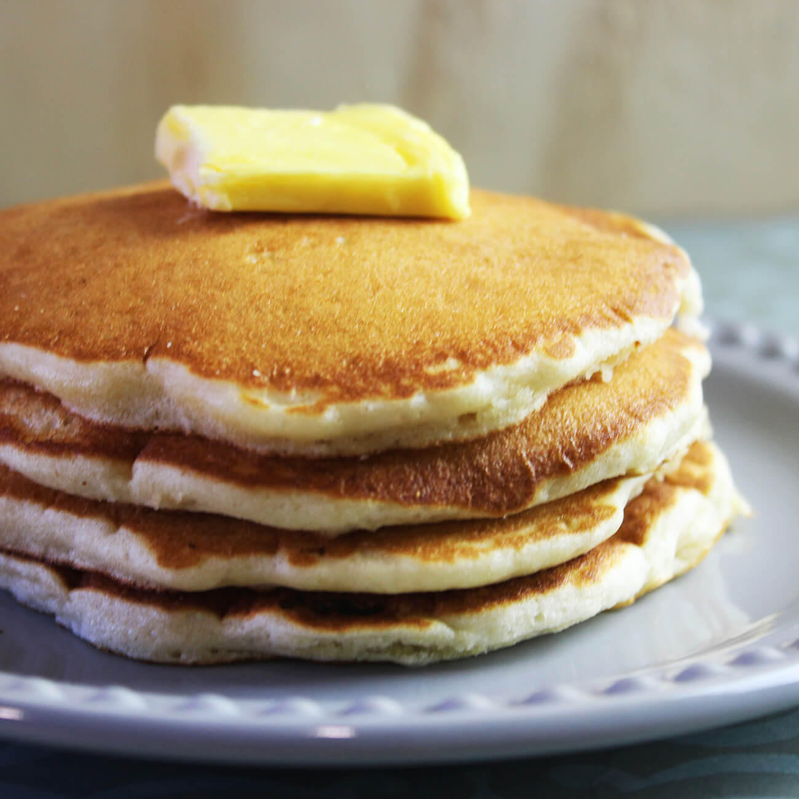

Hot Cakes recipe

A couple of delicious looking hot cakes for breakfast
In the following tutorial we'll learn how to make some delicious hot cakes in easy steps
Ingredients
- 1 ¼ cups all-purpose flour
- ⅓ cup white sugar
- ⅓ cup dry farina cereal (such as Cream of Wheat®)
- ¼ cup vegetable oil
- 1 egg
- 1 teaspoon vanilla extract
- 1 teaspoon baking powder
- 1 teaspoon baking soda
- ½ teaspoon salt
Steps
- Combine buttermilk, flour, sugar, farina, oil, egg, vanilla extract, baking powder, baking soda, and salt in a bowl. Beat using an electric mixer on low until just combined.
- Heat a lightly oiled griddle over medium-low heat. Drop batter by large spoonfuls onto the griddle and cook until middle is set, about 4 minutes. Flip and cook until golden brown on the other side, 3 to 5 minutes. Repeat with remaining batter.